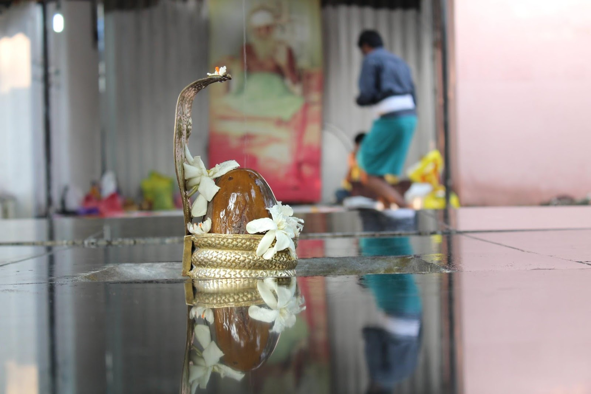
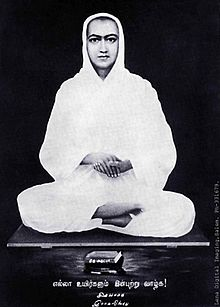
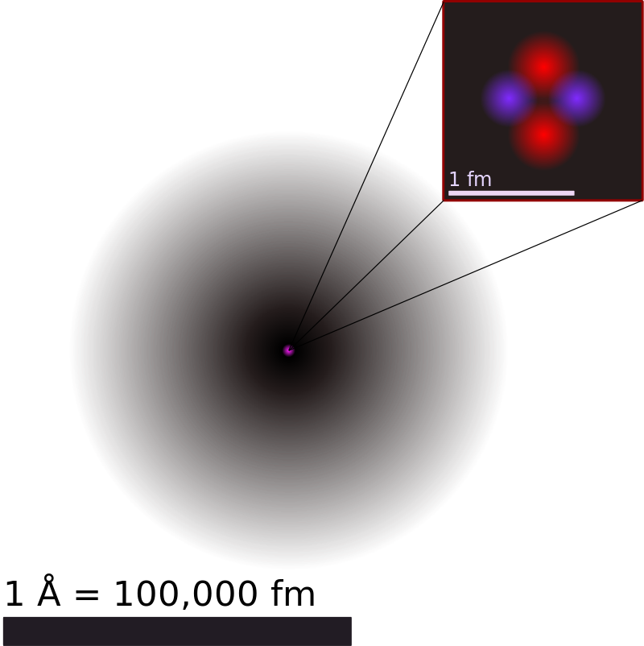
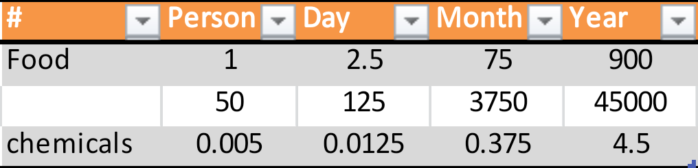

திருச்சிற்றம்பலம்

திருவிளங்க என்னும் சொல்லிற்கான பொருளை முதலில் பார்ப்போம்.
த் + உரு ; த் + அங்கம் ; த் + இல்லை
த் - என்பது இறைவனுடைய உருவம் அல்லது வடிவம் என சொல்லலாம் . அதனால்தான் ‘திரு' என்ற வார்த்தையே இறைச்சொல் எனப்பட்டது. த்+உரு தான் ‘திரு' என்றாகிற்று.
இதையே மற்றும் ஓர் இடத்தில் த் + அங்கம் - தங்கம் , அதாவது தங்கம் இறைவனுடைய உடல் போன்று ஜொலிப்பதாக சொல்லப்பட்டது. இன்னும் இதை ஊர்ஜித படுத்தும் விதமாக
அதாவது சிதம்பரம் திரு நடராஜர் கோவிலுக்கு தரிசனம் காண சென்றவர்கள், அங்கே உருவம் இல்லை என்பதை 'த்' இல்லை என்று சொல்ல அதுவே கால போக்கில் தில்லை என்று அழைக்கப்பட்டது .
திருவிளங்க என்பதை அடிப்படையாக கொண்டு தான் பல பாடல்களை வள்ளலார் பாடியுள்ளார். 
திருவிளங்கச் சிவயோக சித்திஎலாம் விளங்கச் சிவஞான நிலைவிளங்கச் சிவானுபவம் விளங்கத் தெருவிளங்கு திருத்தில்லைத் திருச்சிற்றம் பலத்தே திருக்கூத்து விளங்கஒளி சிறந்ததிரு விளக்கே உருவிளங்க உயிர்விளங்க உணர்ச்சியது விளங்க உலகமெலாம் விளங்கஅருள் உதவுபெருந் தாயாம் மருவிளங்கு குழல்வல்லி மகிழ்ந்தொருபால் விளங்க வயங்குமணிப் பொதுவிளங்க வளர்ந்தசிவக் கொழுந்தே
.
இந்த பாடலில் வள்ளலார் இறைவனின் உருவம் யாது , அவர் என்ன செயல் செய்கிறார் , அவருடைய ஞானம் அல்லது அறிவு எத்தகையது , அவரின் அனுபவம் என்ன ஆகியவற்றையே கேட்கின்றார்.
நாம் 'த்' என்பதை பற்றி பார்த்தோம், எங்கே நாம் இறைவன் 'த்' அல்லது 'ந' அல்லது 'தி' என்ற எழுத்துக்களின் வடிவத்தில் அவர் இப்படியும் அப்படியும் இருப்பாரோ என்று தவறாக புரிந்து கொள்ள கூடாது என்பதிற்காக, இதற்கான பதிலையும் அகவலில் உள்ள வரிகளில் மிகத் தெளிவாகப் பதிவு செய்கிறார்.
"அருளே நம் இயல், அருளே நம் உரு அருளே நம் வடிவு ஆம் என்ற சிவமே" "அருளே நம் அறிவு, அருளே நம் மனம், அருளே நம் குணம் ஆம் என்ற சிவமே"
திரு என்பது விளங்க வேண்டுமானால் அல்லது நாம் புரிந்துக் கொள்ள வேண்டுமானால் ,
முதலில் ஏன் இதை பற்றி நாம் தெரிந்துகொள்ள வேண்டும்?
அதனால் நமக்கு என்ன பயன்?
இந்தக் கல்வியை தான் வள்ளலார் 'சாகாக்கல்வி ' என்று குறிப்பிடுகின்றார். இறைவனின் உருவம் என்றும் அழியாத பரம்பொருளாக இருக்கின்றது என்பதை நாம் புரிந்து கொண்டுவிட்டால் , அழியும் நம் இந்த தேகத்தை அந்த அழியாத இறைவனின் தேகமாக மாற்றுவது எப்படி ?
இதை பற்றியே வள்ளலார் திருஅருட்பா முழுவதிலும் குறிப்பிடுகின்றார். இதுவே 'சாகாக்கல்வி ' ஆகும்.
அப்படியென்றால் சாகும் கல்வி என்று ஒன்று இருக்க வேண்டும் ? , அதுவே அன்றாடம் நாம் பள்ளி கூடங்களில் கற்கின்ற ஒன்று. உதாரணமாக நாம் பாட புத்தகங்களில் அணுக்களை பற்றி படித்துள்ளோம், புரோட்டான் நடுவிலும் அதனை சுற்றிக் கொண்டு எலக்ட்ரான் இருக்கும் என்றும், அவை மிக நுண்ணிய கருவிகளை கொண்டே கண்களால் காண இயலும் என்றும் கற்றுள்ளோம். உண்மையில் புரோட்டான் மற்றும் எலக்ட்ரான் இரண்டிற்கும் ஆன இடைவெளி பல மயில் தூரம், நாம் இவற்றை கற்பனையாக ஒரு வட்டத்தில் மட்டுமே இதனை வரைந்து படித்தோம்.

ஆனால் இதற்கெல்லாம் அப்பாற்பட்டு வள்ளலார் ஏழு வகையான அணுக்களை கூறுகின்றார். அறிவியலால் இன்னும் இதை கண்டுபிடிக்க இயலவில்லை. வாலணு, திரவவணு, குருவணு, லகுவணு, அணு, பரமாணு, விபுவணு என ஏழு விதமான அணுக்கள் இந்த பிரபஜத்தில் உள்ளதாக வள்ளலார் கூறுகிறார், மேலும் இதற்கான விளக்கத்தை விரிவாக உரைநடை பகுதியில் கூறுயுள்ளார். இதுவே உண்மையை உள்ளபடி உணர்ந்த சாகாக்கல்வி ஆகும்.
நாம் இது வரை செய்த எந்த செயலானாலும் அதன் முடிவு மற்றும் நோக்கம் "திருவிளங்க" தான் என்பதை புரிந்து கொள்ள வேண்டியது அவசியம். அப்படியிருக்க சற்று வேறு விதமான கண்ணோட்டத்தில் திருவிளங்க என்பதை பற்றி பாப்போம்.
இரண்டு, ஒன்று ஜீவகாருண்யம் மற்றொன்று இயற்கையோடு இணைந்து இருத்தல்.
நாம் இந்த வருடம் ஆரம்பித்து செயல்பட்டு கொண்டிருக்கும் சிவா இயற்கை(SANF – Siva Art of Natural Farming) என்னும் திட்டத்திற் க்கு, இறைவனுடைய அருள் பரிபூரணமாக இருப்பதை நன்கு உணர முடிகிறது. இதிலிருந்து இயற்கையோடு ஒன்றி இருத்தல் இறைவனுக்கு பிடித்தது என்பது மிகவும் தெளிவாகிறது.
இப்போது இயற்கையோடு இணைந்திருத்தல் என்பதை பற்றி சற்று விரிவான கண்ணோட்டத்தில் பார்ப்போம்.இதை பற்றி பார்க்க இப்ப என்ன அவசியம் என்று கேட்குறீர்களா ? ஆம், மிக முக்கியமா ஒன்று தான். சராசரியாக ஒரு மனிதன் உட்கொள்ளும் உணவில் எவ்வளவு நச்சுத்தன்மை அல்லது ரசாயனம் கலந்துள்ளது என்ற அடிப்படையில் ஒரு பட்டியல் FDA(Food and Drug Administration) வெளியிட்டுள்ளது .

அதாவது ஒரு மனிதன் ஒரு நாளைக்கு 2.5kg உணவு சாப்பிடுகிறார்கள் என்றால் வருடத்திற்கு 900kg- சாப்பிடுகிறார்கள், பூச்சிமருந்துகள் தெளிக்கப்பட்டு விளைவிக்கப்பட்ட அரிசி, தானியம், அல்லது காய்கறிகள், பருப்பு போன்றவைகளால் சமைக்கப்பட்ட உணவில் 4.5kg கெமிக்கல்ஸ் அதாவது ரசாயனம் உள்ளது.
இதன் மூலம் பல்வேறுபட்ட நோய்களால் தற்போதைய தலைமுறையினர் பாதிக்கப்பட்டுளோம் என்பது உங்களுக்கு நன்றாகவே தெரியும் . எனக்கு மிக நெருங்கிய நண்பர் கூட ஹார்ட் அட்டாக்கில் மரணம் அடைந்தார். இந்த விஷம் கலந்த உணவை நாம் உண்பது மட்டுமில்லாமல் ஜீவகாருண்யம் , அன்னதானம் என்ற பெயரில் பல ஆயிரம் மக்களுக்கும் இவற்றை கொண்டு சேர்க்கின்றோம். இப்படி பயமுறுத்தக்கூடிய விஷயத்தை பற்றி நாம் ஏன் கண்டுகொள்வதில்லை என்பது கேள்விக்குறி ?
குறைந்தபட்சம் நமது சிவபித்தன் கும்பத்தில் பத்து குடும்பங்களை எடுத்துக்கொண்டால் கூட சராசரியாக 50 பேர் உள்ளனர். இவர்கள் அனைவருக்கும் ஒரு வருடத்திற்குத் தேவையான நஞ்சு இல்லாத உணவை கொடுக்க வேண்டுமானால் நம்மில் நான்கு பேராவது இயற்கை விவசாயத்தில் உடனடியாக இறங்கினால்தான் நம்மை இந்த பேராபத்தில் இருந்து காப்பாற்றி கொள்ள முடியும்.இதை SANF திட்டத்தின் மூலம் நாம் செயல்படுத்தி கொன்றிருக்கின்றோம்.
இப்போது நம்ம தலைப்பிற்கு செல்வோம் ....திருவிளங்க. விளங்க என்றால் தெரிந்துகொள்ளுதல்.வள்ளலார் மூன்று வகையான ஞானங்களை பற்றி கூறுகிறார். அதாவது உபாயஞானம் , உண்மைஞானம், அனுபவஞானம். இதில் உபாயஞானம் என்பது ஜீவ அறிவு, மிக சிறிய ஒளி. உண்மைஞானம் என்பது மெய் அறிவு. அனுபவஞானம் என்பது ஆன்ம அறிவு அல்லது இறை அறிவு எனலாம். இதில் அருள் மூலம் கிடைக்க கூடிய அறிவு அனுபவஞானம், இதைத்தான் சூரிய பிரகாசம் என்று சொல்வது.
இந்த அனுபவஞானம் என்பதற்கு ஒரு உதாரணம் பார்ப்போம். நம் சிவபுரியில் விநாயகர் சந்நிதியில் உள்ள என்னை அழுக்குகளை சுத்தம் செய்ய வேண்டுமானால் நாம்
பொதுவாக சர்ஃப்(surf) பாக்கெட், தேய்ப்பதற்கு ஸ்க்ரப்பர்(Scrubber), எலுமிச்சை போன்ற பலவற்றை வைத்துதான் நாம் சுத்தம் செய்வோம். ஆனால் சிவபுரியில் உள்ள அன்பர் ஒருவர் ஒரு அழுக்கு துணியை எடுத்து விளக்கில் உள்ள எண்ணையில் துவைத்து அதை எண்ணை
பிசுக்கு உள்ள இடங்களில் எல்லாம் தேய்த்து சற்று ஊற வைத்தார், சிறிது நேரம் கழித்து அதே துணியால் நன்கு துடைத்து அந்த அழுக்குளை எல்லாம் சுத்தம் செய்தார். நாம்
பல கெமிக்கல்ஸ்(Chemicals) பயன்படுத்தி சுத்தம் செய்வதை விட, இது மிகவும் சுத்தமாக இருந்தது. இதுவே அனுபவ ஞானம். எது இந்த அழுக்கு உருவானதிற்கு காரணமாக இருந்ததோ அதை வைத்தே சுத்தம் செய்தார், அழுகைக் கொண்டே அழுக்கை எடுத்தார். நாம்
இயற்கையோடு இனைந்து செயல் படும்போது அனைத்துமே எளிமையாக்க படும் என்பதிற்கு இது ஒரு சிறந்த உதாரணம்.
நாம் இயற்கை முறை விவசாயத்தில் மக்கு உருவாக்குவது எப்படி என்று படித்தோம் அதில் ஒருவிதை இலை (60%) மற்றும் இருவிதை இலை (40%) ஆகிய இரண்டையும்
சரியான சதவீதத்தில் பயன்படுத்தி மக்கு உருவாக்க வேண்டும் என்று அறிவோம். இது நமக்கு முழுமையாக விளங்கியதா? என்றால் இல்லை. இதை சற்று ஆழுந்து
சிந்திக்கும்போது அருள் நமக்கு அளித்த பதில் இட்லி. ஆம் இட்லி மாவு அரைக்க அரிசி (monocot )உளுந்து (dicot) ஆகிய இரண்டும் சரியான விதத்தில் இருந்தால் தான் மாவு
நன்றாக வரும். உளுந்து அதிகமானால் மாவு பூத்து, அடியில் நீர்த்தும் இருக்கும்.அதேபோல மக்கிற்கு இருவிதை இலை அதிகமானால் அந்த செடி அழுகிவிடும்.
நாம் நல்ல ஒரு விவசாயியை சந்திக்கும் வாய்ப்பு ஏற்பட்டது, அவருடைய நிலங்களை பார்க்கும் போது ஒரு பகுதி மிகவும் காய்ந்த நிலமாகவும் மற்றொரு பகுதியில் இயற்கையாகவே மக்கு மிகுந்து நன்றாக குளுமைகயாக இருந்தது. நாம்
இவரிடம் மக்கிற்கு அடிப்படையான உயிர் வேலி ஏன் அமைக்கவில்லை என்று கேட்ட போது , அதற்கு அவர் அதல்லாம் இங்கே சரி வராது , பக்கத்து வயல்ல 200ரு அடி
கொண்ட போர்(Bore well), மற்றும் முல் வேலி அமைத்து இருக்கிறார் அதேபோல் நானும் செய்யனும் என்று கூறினார். அடிப்படையை புரிந்து கொள்ளாததனால் ,மற்றவர் என்ன செய்கிறார்களோ அதுவே சரி என்று கூறும் நிலைக்கு தள்ளப்பட்டுள்ளார்.
அடிப்படையான சில விஷயங்களை நாம் தெறிந்து கொள்ள வேண்டும், குறிஞ்சி, முல்லை, மருதம், பாலை, நெய்தல் என்பனவே தமிழர் நிலத்திணைகள் ஆகும். இவற்றை
நமசிவாய என்னும் ஐந்தெழுத்து மந்திரத்தோடு ஒத்து பார்க்க வேண்டும் ,அதன் தன்மைக்கு ஏற்ப நமது விவசாயம் அமைய வேண்டும் .
இவையிரண்டுக்கும் இடையில் அமைந்த பாழ் நிலம் பாலை எனப்பட்டது.
இயற்கையாகவே காற்றில் தேவையான ஈரப்ப்பதங்கள் உள்ளன , அதை எப்படி ஈர்த்து மண்ணிற்கு கொடுப்பது என்பதை சிந்திக்க வேண்டும் .இந்த வேலையை தான் மக்கு
செய்கின்றது . கார்பன் என்பது இயற்கை முறை விவசாயத்திற்கு(ஆர்கானிக்) மிகவும் அடிப்படையான ஒன்று . சிறிய உயிர் இனம் முதல் பெரிய உயிரினங்கள்
அனைத்தையுமே இறைவன் களிமம்(கார்பன்) கொண்டே படைத்துள்ளான். இந்த கார்பன் ஆனது எப்படி நிலத்திற்க்கு கிடைக்கின்றது? பால் வெளிக்கு அப்பால் இருந்து வரும்
காஸ்மிக் கதிவீச்சு(Cosmic Rays) நம் வெளி மண்டலத்தில் முட்டி , ஒரு வெடிப்பு ஏற்பட்டு கார்பன் பிரிந்து நிலத்திற்கு வருகின்றது . இந்த கார்பன் மழையோடு கலந்து.
கார்போனிக் ஆசிட் ஆக மாறி, மழை மூலம் இறங்கி மலைகளில் உள்ள கால்சியம், மெக்னீசியம் போன்ற அணைத்து மினரல்களையும் எடுத்துக் கொண்டு அருவியாக
கடலில் கலக்கின்றது. இதனால் தான் மலையில் விளையும் அனைத்து பொருள்களும் மிகவும் வீரியமாகவும், சத்துள்ளதாகவும் இருப்பதை நாம் உணர வேண்டும்.அதேபோல் மேக கூட்டங்கள் மோதி ,
நைட்ரோஜனை பிரித்து பூமியில் சேருகின்றது. இந்த கார்பன் மற்றும் நைட்ரோஜன் சுழற்சியை இறைவனின் தனிப்பெரும்கருணையால், இயற்கையே இயக்கி கொண்டு இருக்கின்றது.. இந்த சுழற்சியில் நம்மை எப்படி ஒரு அங்கமாக மாற்றிக் கொள்வது என்பதை தான் நாம் செய்ய வேண்டும். மற்றபடி அனைத்தையுமே இயற்கை பார்த்துக் கொள்ளும், நாம் எதையும் செய்ய தேவையில்லை, இதுவே இயற்கை விவசாயம்.
மரம் நமக்கு ஆக்ஸிஜன் (O2) தருகின்றது, அதை சுவாசித்து நாம் கார்பன்டைஆக்சைடை (CO2) வெளியே விடுகின்றோம். இதை கூர்ந்து கவனித்தால் நாம் நம்மிடையேயுள்ள கார்பனையும் சேர்த்து கொடுத்து நஷ்டம் அடைகின்றோம். மரம் இதனை திரும்ப வாங்கிக்கொண்டு க்ளுகோஸ்(Glucose) தயார் பன்னுகின்றது , இதற்கு போடோசிந்தஸிஸ்(Photosynthesis) என்று பெயர். ஆனால் நமக்கு இந்த கார்பனை எப்படி க்ளுகோஸ் ஆக மாற்றுவது என்பது தெரியாது நஷ்டம் அடைகிறோம். இது ஒரு சுழற்சியாக நடந்து கொண்டு இருக்கின்றது.
இதையே மாணிக்கவாசகப் பெருமான் சிவபுராணத்தில் விளக்குகின்றார்,
நாம் ஆக்ஸிஜனை வாங்கி கார்பனையும் சேர்த்து வெளியே கொடுத்து நம்மை நஷ்டமடைய செய்கின்றோம் என்பதை உணர்த்துகின்றது. இதிலிருந்து எப்படி நம்மை காத்து கொள்வது என்றதைத்தான் "மெய்யேயுன் பொன்னடிகள் கண்டின்று வீடுற்றேன்" என்று குறிப்பிடுகின்றார். மேலும் வள்ளலார் வேகமாக நடக்காதே, சத்தமாக பேசாதே, "மெல்லன துதிக்க" என்றும் குறிப்பிடுவதற்கு காரணமும் இதுவே.
இதையே ஏம சித்தி ,தேகசித்தி, வகர வித்தை, தகர வித்தை என்று சொல்லுகின்றார். நான்கு புருஷார்த்தம் என்பதிலும் குறிப்பிடுகின்றார் .
1. ஏமசித்தி.
2. சாகாக்கல்வி. .
3. தத்துவநிக்கிரகம்
4. கடவுள் நிலையறிந்து அம்மயமாதல்.
எந்த வகையிலாவது "கரிசிலாங்கண்ணியையும், முசுமுசுக்கை, தூதுவளையும் " நம்மை உட்கொள்ள சொன்னதையும் நாம் சிந்தித்தித்து பார்க்க வேண்டும், இவை அனைத்துமே நாம் நஷ்டமடைவதில் இருந்து காத்து ஏமசித்தியை கொடுக்கும், மிக அற்புத இயற்கை அமுதமாகும்.
இந்த அடிப்படையை உணர்வதன் மூலம் உண்மையை அறிந்து, சாகாக்கல்வி பெற்று திருவிளங்க வாழ்த்துக்கள்.